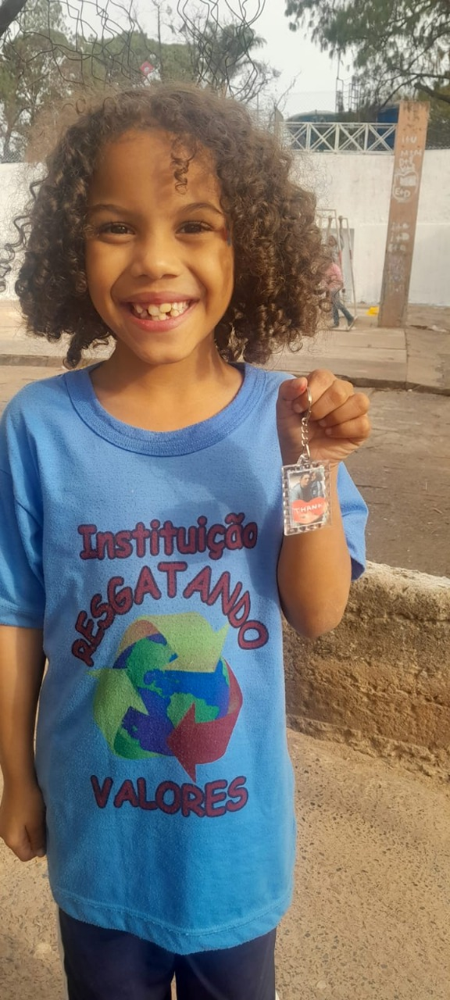

Bem-vindo à Nossa ONG
A OSC já transformou a vida de centenas de crianças e adolescentes em Campinas, oferecendo não apenas suporte material, mas também formação cidadã e afetiva. Depoimentos da comunidade destacam a importância da instituição como ponto de esperança, cuidado e transformação social no Jardim Boa Esperança e adjacências.
Sobre Nós
A OSC Resgatando Valores é uma instituição social sediada em Campinas (SP), que atua há 14 anos no atendimento a crianças e adolescentes de 0 a 18 anos em situação de vulnerabilidade social .
Com um trabalho pautado no cuidado, na valorização da dignidade e na promoção de oportunidades, a OSC oferece acolhimento, atividades socioeducativas e culturais, além de alimentação diária, garantindo um ambiente seguro e de desenvolvimento integral para cada criança e adolescente atendido.
Nossa Missão
Promover o bem-estar infantil através de programas de educação, saúde e desenvolvimento emocional. Nossos valores: empatia, inclusão e impacto duradouro para um futuro brilhante.

Como Apoiar Nossa Causa
Existem várias formas de contribuir para transformar vidas. Escolha a que mais combina com você!
💰 Doações Financeiras
Chave Pix (CNPJ):
14.724.004/0001-27
🎁 Doações Materiais
Doe alimentos, roupas, brinquedos
e materiais escolares.
🤝 Trabalho Voluntário
Compartilhe seu tempo, talentos
e conhecimento com quem precisa.
🏢 Parcerias Institucionais
Fortaleça nossa rede de apoio e
aumente o impacto social.
📣 Divulgação
Ajude a dar visibilidade à causa e
ampliar o alcance das ações.
Entre em Contato Conosco 💛
Quer ser voluntário, fazer uma doação ou saber mais sobre o nosso trabalho? Envie sua mensagem e entraremos em contato!
Responsável: Luci Zacarias
Email: contato@suongcriancas.org
Telefone/WhatsApp: (19) 99810-7800
Endereço: Rua Lúcia Helena Zampieri (Caminho Hum, S/N) Jardim Boa Esperança, Campinas – SP, CEP 13091-525
CNPJ: 14.724.004/0001-27